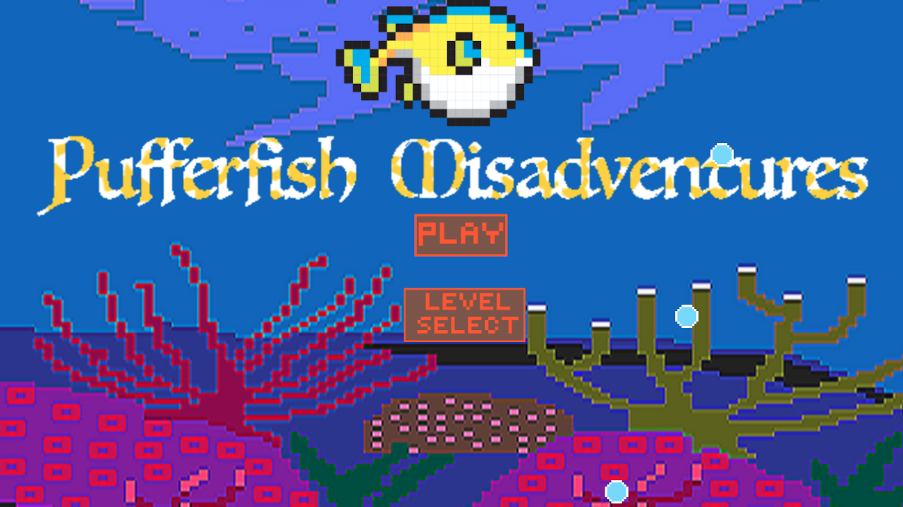
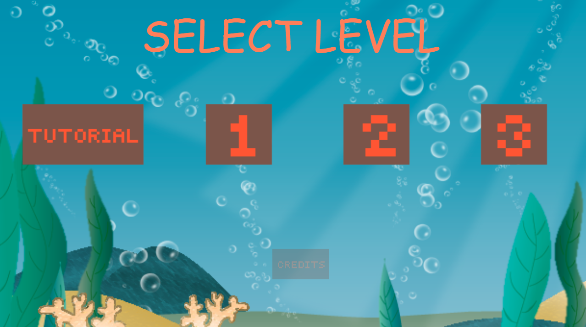
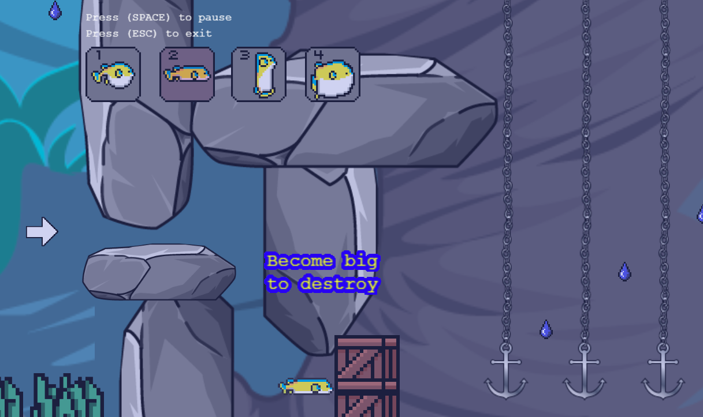

A Shapeshifting Platformer
Play the game HERE!
This game was created using the Phaser 3 library. Myself and a team of 3 others created this game as part of our final project for a class. Students were given 3 weeks to conceptualize, design, and polish a game using the given theme: scale!

We utilized the pufferfish's ability to grow or shrink in size to fit the theme of the game. The player has the ability to move the pufferfish anywhere that is underwater and free of collision. The most important mechanic, however, is shapeshifting. The player is able to use keys 1, 2, 3, and 4 to change shapes between: the regular sized pufferfish, a flat, but wide pufferfish, a tall, but skinny pufferfish, and finally, a very large and menacing pufferfish. Our chosen prompt for this project was scale. We believe that the mechanic of scaling the body of the pufferfish directly correlates to the prompt for this project. Combining these abilities with movement allows the player to traverse the level and reach their goal. Another important mechanic is the water level mechanic. Throughout the course of each level, the water level decrements, and the player’s range of motion is restricted along this y-axis.

In this project I learned how to program in JavaScript while implementing a library I had never used before. I also learned how to work in teams and develop sprints, as well as run playtests and generate reports to improve our game. One of my favorite parts of this project was the constraints put onto us by the class. Having a theme for the game allows us to focus our creative thinking towards a common idea, and it was fun to explore the possible options within the theme.